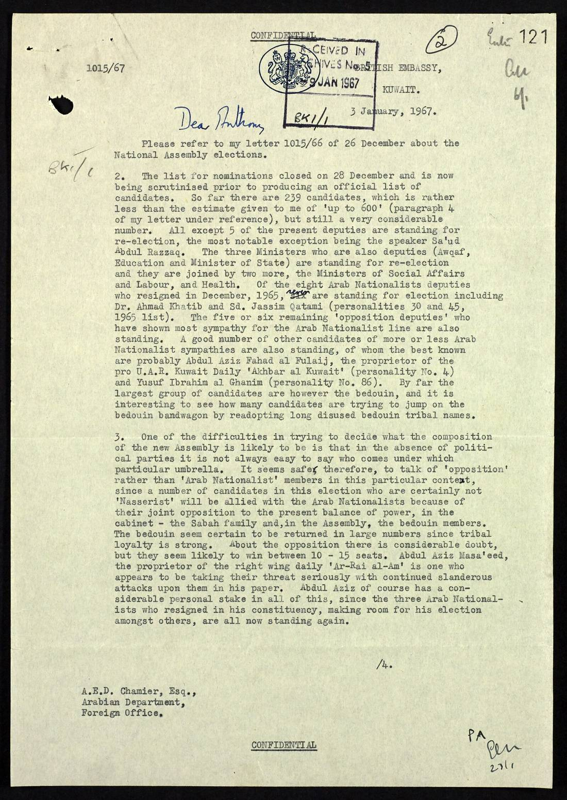

ترشح جاسم القطامي مجددا مع د. أحمد الخطيب، ووقّع بيانا عاما نشرته أخبار الكويت في ٢٨ يناير ١٩٦٧. وخسر الاثنان، وتذكر السفارة أن معظم الناس، حتى مؤيدي الحكومة، يقبلون بأن الأصوات تم التلاعب بها في دائرتيهما.
أهميتها
التسجيل البريطاني لانتخابات ١٩٦٧ التي لا يزال الكويتيون يذكرونها بالتزوير، واسم جاسم الكامل، جاسم عبدالعزيز القطامي، بين الموقعين على البيان.
من المقصود
اسمه في هذه الوثيقة، جاسم عبدالعزيز القطامي، يطابق نسبه في شجرة العائلة.
صور الصفحات
الأرشيف الوطني البريطاني، FCO 8/608، ص ٤٥الأرشيف الوطني البريطاني، FCO 8/608، ص ٤٦الأرشيف الوطني البريطاني، FCO 8/608، ص ٩٨الأرشيف الوطني البريطاني، FCO 8/608، ص ١١٣الأرشيف الوطني البريطاني، FCO 8/608، ص ١١٨

الأرشيف الوطني البريطاني، FCO 8/608، ص ١٢٣
النص الأصلي
Page 123: Of the eight Arab Nationalists deputies who resigned in December, 1965, are standing for election including Dr. Ahmad Khatib and Jassim Qatami (personalities 30 and 45, 1965 list).
Page 98, statement printed in Akhbar al Kuwait of 28 January, 1967, signed by, among others: … Dr. Ahmad Khatib … Abdul Latif Hamad al-Falah, Jasim Abdul-Aziz al-Qatami, Muhammad Yusif al-'Adasani …
Page 45: Unfortunately for the Sabah, Dr. Khateeb and Jasim Qatami were among the most effective speakers in the last Assembly, if indeed they were not the most effective.
Page 46: … they chose, instead, to frustrate his election, and that of Jasim Qatami, to the Assembly. And they did it clumsily.
Page 113: That Ahmad Khatib and Jasim al Qatami, the leaders of the Arab Nationalist Movement and the only two deputies to poll over 1,000 votes in 1963, should fail completely in 1967, is certainly strange …
Page 118: … the majority, even including Government supporters, probably accept that some tampering with the votes took place at least in the two constituencies where Khatib and Qatami were standing.
ملاحظات
نُشر بيان الصفحة ٩٨ بالعربية، والأسماء هنا بالكتابة البريطانية.
أسماء أخرى
د. أحمد الخطيب
المصادر
الأرشيف الوطني البريطاني في لندن، رقمنه الأرشيف الرقمي للخليج العربي (agda.ae). الصور منشورة بإذن من الأرشيف الوطني البريطاني.
مرجع الأرشيف
FCO 8/608 · Elections
كيف كُتب هذا النص: نُسخ من قراءة الأرشيف لنص الصورة، وصُحح بالمقارنة مع الصورة حيث كانت القراءة مشوهة. وتشير … إلى نص محذوف. الترجمة العربية من Claude، يرجى مراجعتها.